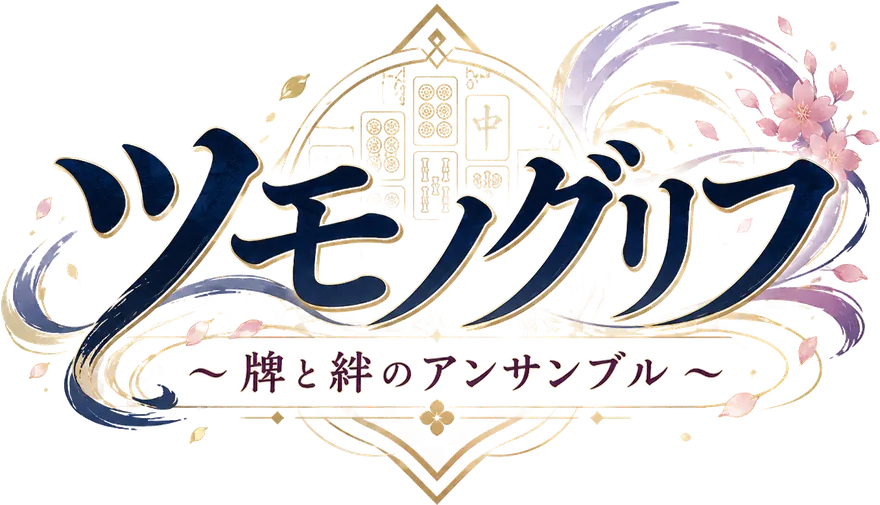
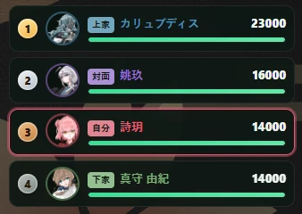

開発中テスト版 公開中

点棒が、HPになる。
麻雀に「キャラクターの能力」と「物語」を乗せたブラウザゲームです。ひとりで打つ麻雀を、相棒との共闘に変えます。
詩玥（シ・ユエ）「うわ！？そんなに持っていくノ！？ も～、だから守りは苦手なんだってばぁ！」
画面はすべて開発中のものです。
4人で打つリーチ麻雀です。ただし持ち点は「HP」として扱われ、振り込めば削られ、和了れば相手から奪い返します。
卓につくのは、それぞれ固有の能力を持った16人のキャラクター。あなたは相棒をひとり選び、その相棒と一緒に卓を勝ち抜きます。
打つほどに絆は積もり、同じ場面でも相棒から返ってくる言葉が変わっていきます。
其の一
好きなキャラで1局から。4人麻雀・三人麻雀のほか、2対2のペア戦、3人チームの団体戦も選べます。
1局（東風戦）でおよそ10分
其の二
自分の雀士を作って師匠に弟子入りし、修行と大会を重ねながら物語を進める育成モードです。
弟子を作って1ヶ月分でおよそ10分
其の三
3人パーティで塔を潜るローグライト。強化を引きながら、どこまで登れるかに挑みます。
数階もぐっておよそ15分

持ち点をHPバーとして表示します。振り込めば自分のバーが削れ、和了れば相手のバーを削る。順位を数える麻雀が、殴り合いの見えかたに変わります。
−8,000満貫を1回
振り込むと
役も点数も自動で計算されるので、ルールを知らなくても打てます。知っている人には、いつもの麻雀がそのまま土台にあります。
出迎えてくれる対戦ホームと、物語が進む紙芝居パート。
対局中は相棒が隣に立ち、聴牌や被弾に反応して声をかけてきます。打った記録は絆として積もり、同じ場面でも返ってくる言葉が変わっていきます。
「ひまだヨ〜。ねえ、一局いこ？ “ツモれば勝ち”の真髄、教えてあげるヨ！」
遊びながら解禁される
3人がいます
この中からひとりを相棒に選んで卓につきます。能力はキャラごとに別物で、点棒の減りかた・増えかたが変わります。ほかに、遊びながら解禁できるキャラクターが3人います。
壱
ブラウザでそのまま始まります。インストールもアカウント登録も要りません（推奨は PC の Google Chrome です）。
弐
クリアする必要はありません。「分からない」「難しい」「ここでやめたくなった」と感じたら、その時点でもう十分です。むしろ、そこがいちばん知りたい情報です。
参
回答時間の目安は約3〜5分。Googleへのログインは不要です。ゲーム内の「設定 → テスト版について / 不具合を報告」からも同じフォームを開けます。
下のどれかに触れてもらえると助かります。もちろん、これ以外の感想も歓迎です。
はじめて遊んだとき、何をすればいいか分かりましたか。
プレイ中に、迷った場所や詰まった場所はありましたか。
麻雀の経験は、どのくらい理解の助けになりましたか。
どの部分を面白いと感じましたか。
また遊びたいと思えましたか。思えなかったとしたら、どこで気持ちが切れましたか。
以下は把握済みです。報告いただかなくて大丈夫です。
どんな内容でも歓迎します。短い一行でも構いません。次のどれも、同じくらい価値があります。
ゲーム内の「設定 → テスト版について / 不具合を報告」で 環境情報をコピー を押してから貼り付けていただけると、こちらで原因を追いやすくなります（入るのはバージョン・ブラウザ・画面サイズだけで、メールアドレスや表示名は入りません）。画面の写真があれば、それだけでも助かります。
Test Build
v0.9.0-test.1
更新日 2026/09/08
不具合を報告するときは、この版数を書き添えていただけると助かります。ゲーム画面の右下にも小さく表示されています。